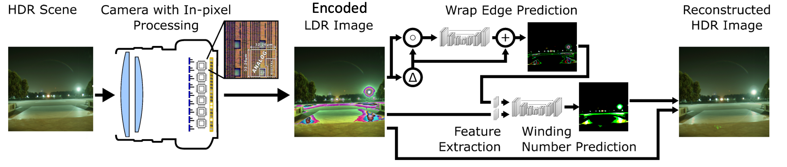

MantissaCam: Learning Snapshot High-dynamic-range Imaging with Perceptually-based In-pixel Irradiance Encoding
Haley M. So 1, Julien N. P. Martel 1, Piotr Dudek 2, Gordon Wetzstein 1
1 Stanford University 2 The University of Manchester
Abstract:
The ability to image high-dynamic-range (HDR) scenes is crucial in many computer vision applications. The dynamic range of conventional sensors, however, is fundamentally limited by their well capacity, resulting in saturation of bright scene parts. To overcome this limitation, emerging sensors offer in-pixel processing capabilities to encode the incident irradiance. Among the most promising encoding schemes is modulo wrapping, which results in a computational photography problem where the HDR scene is computed by an irradiance unwrapping algorithm from the wrapped low-dynamic-range (LDR) sensor image. Here, we design a neural network–based algorithm that outperforms previous irradiance unwrapping methods and we design a perceptually inspired “mantissa,” or log-modulo, encoding scheme that more efficiently wraps an HDR scene into an LDR sensor. Combined with our reconstruction framework, MantissaCam achieves state-of-the-art results among modulo-type snapshot HDR imaging approaches. We demonstrate the efficacy of our method in simulation and show benefits of our algorithm on modulo images captured with a prototype implemented with a programmable sensor.
Overview:

An HDR scene is imaged by a camera with in-pixel processing capabilities, implementing the proposed irradiance encoding scheme (left). The resulting LDR sensor image encodes lower irradiance values similar to a conventional camera, but bright image regions, including the lamp and the reflections on the ground, are wrapped rather than saturated (center). The mantissa-encoded image is first processed by a network that predicts the wrap edges and then by another network that predicts the winding number (center right), the number of times the pixel saturates and resets. The per-pixel winding number, together with the mantissa-encoded image, are used to reconstruct the HDR image (right). The symbols ∆ , ◦ , and + denote channel-wise Laplacian operators, channel concatenation, and addition, respectively.
BibTeX:
@inproceedings{hmso2022mantissacam,
title={MantissaCam: Learning Snapshot High-dynamic-range Imaging with Perceptually-based In-pixel Irradiance Encoding},
author={Haley M. So and Julien N. P. Martel and Piotr Dudek and Gordon Wetzstein},
booktitle = {2022 IEEE International Conference on Computational Photography (ICCP)},
year={2022},
doi = {10.1109/ICCP54855.2022.9887659},
}